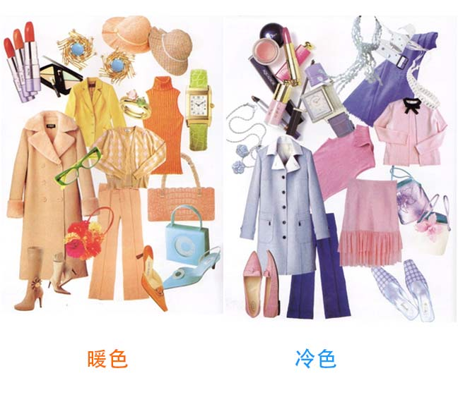
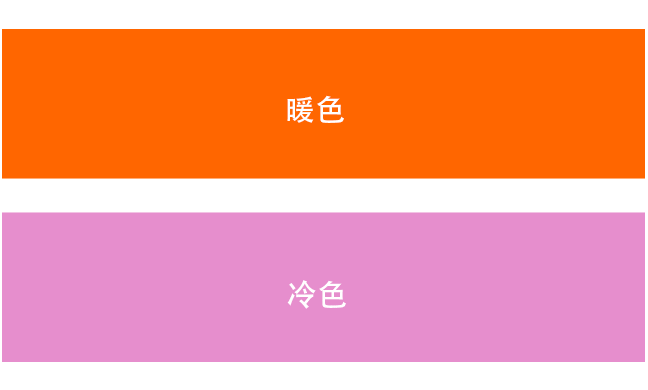

色彩可以分为三大类：冷色、暖色和中性色
| ● |
暖色是含有黄色色调的色彩：如黄色、米色、咖啡色、桔色、绿色、金色 |
| ● |
冷色是含有蓝色色调的色彩：如蓝色、紫色、青色、紫红、粉红，还有银色 |
| ● |
中性色是黑白灰。 |

色彩搭配的原则很简单哦，同色系很容易搭配。冷色和冷色搭配在一起，暖色和暖色在一起就很协调，就如同家人一样，而黑白灰这些中性色，就可以任意搭配冷色或暖色。
我们的肤色、五官、表情其实都有专属于自己的色调。有人天生活泼热情、五官灵动，那她就非常适合暖色调，看上去温暖明亮。有人天生安静，内敛秀丽，那冷色调就是她的主色调。
现在就通过一个小工具来测试一下你适合暖色调还是冷色调吧！

以上两个色块代表暖色及冷色，将它们分别放在下巴处对着镜子照一照，看看哪个色块更能衬托出你的美丽呢？你是暖色美人还是冷色美人？